A continuación le presentamos una selección de los hoteles mejor valorados que pueden estar fácilmente a su disposición.
Estas maravillas de hoteles son solo algunos de las muchos más que puedes encontrar en nuestra agencia.
Citizen M Paris Champs-Élysées
El citizenM Paris Champs-Élysées se encuentra en el distrito de París, a menos de 1 km del Arco del Triunfo, a 18 minutos a pie del Museo de la Orangerie
y a 1,6 km de la Torre Eiffel. Cuenta con restaurante, recepción 24 horas, salón compartido y WiFi gratuita en todas las instalaciones. Las habitaciones
disponen de aire acondicionado, escritorio, caja fuerte, TV de pantalla plana y baño privado con ducha. El establecimiento sirve un desayuno buffet o vegetariano.
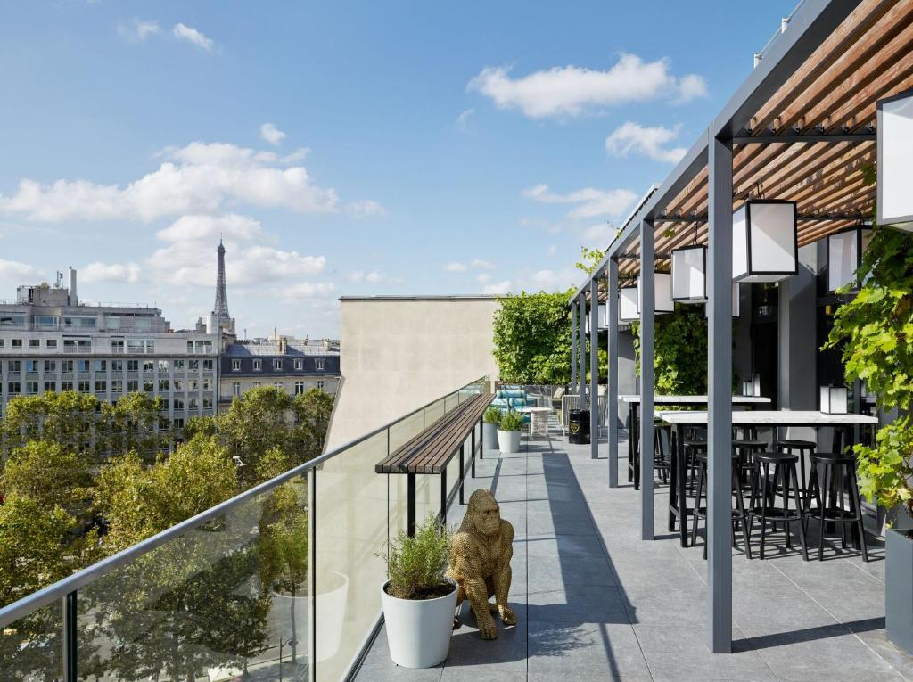
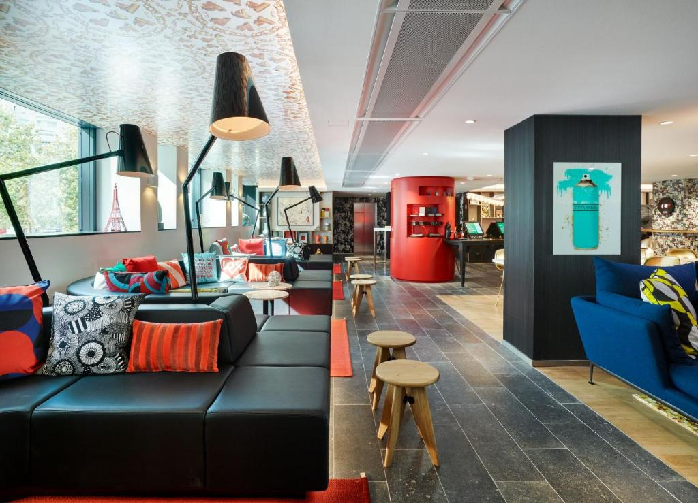
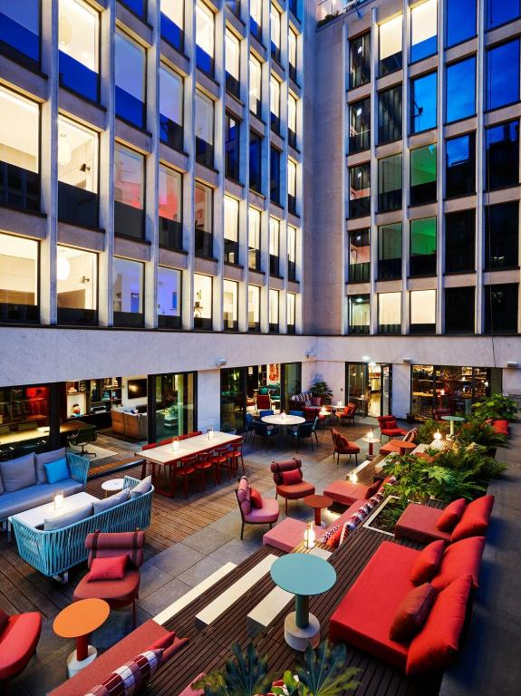
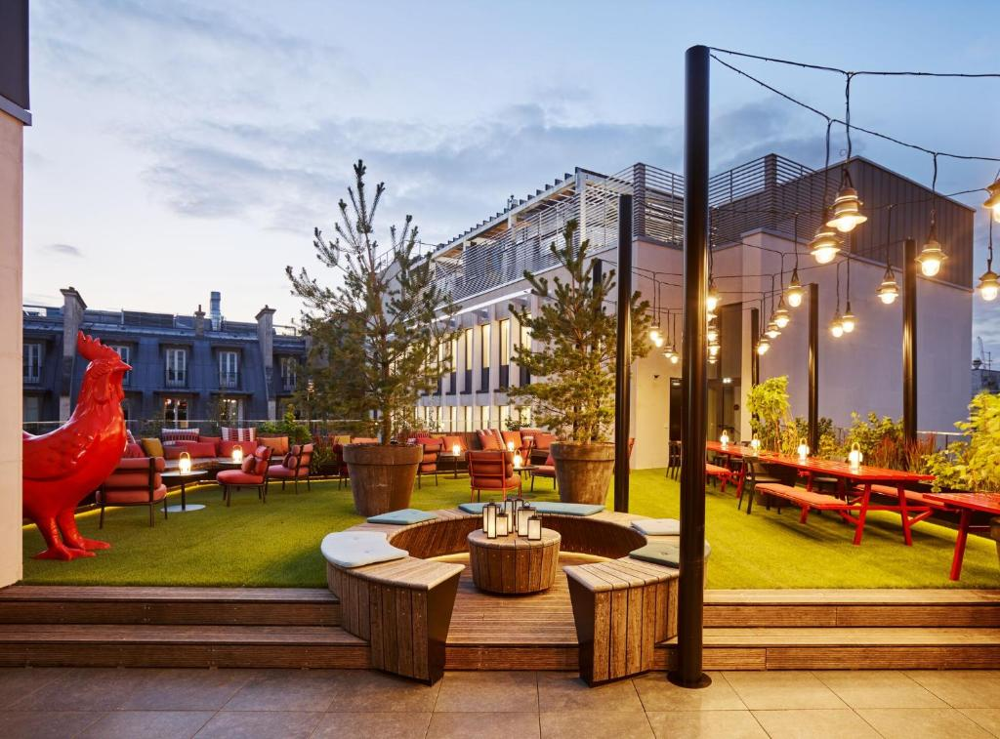
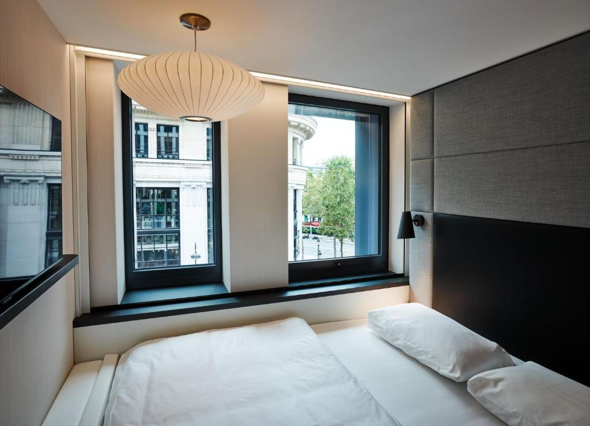
Central London Suites - Fitzrovia
Ofrece alojamiento con vistas a la ciudad, a poca distancia del teatro Dominion, del Museo Británico y de Oxford Street.Los alojamientos disponen de
cocina con microondas y nevera, TV de pantalla plana vía satélite, utensilios de planchado, escritorio y zona de estar con sofá. El baño es privado e incluye
ducha, secador de pelo y artículos de aseo gratuitos. Cerca del apartamento hay varios lugares de interés, como Carnaby Street, el teatro
Prince Edward y el Queen's Theatre. El aeropuerto más cercano es el de London City, ubicado a 13 km del Central London Suites - Fitzrovia.
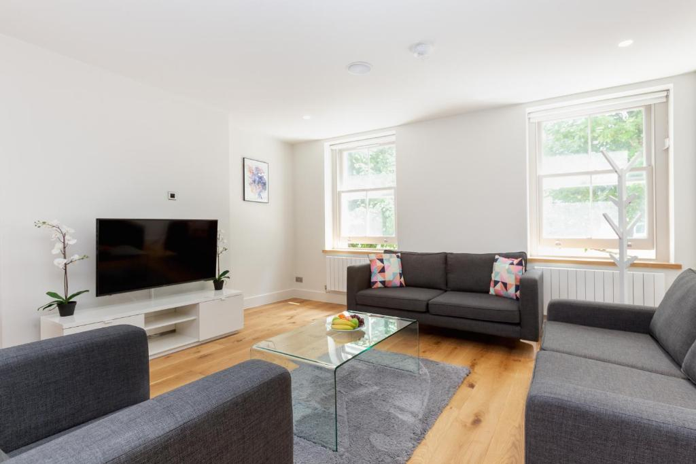
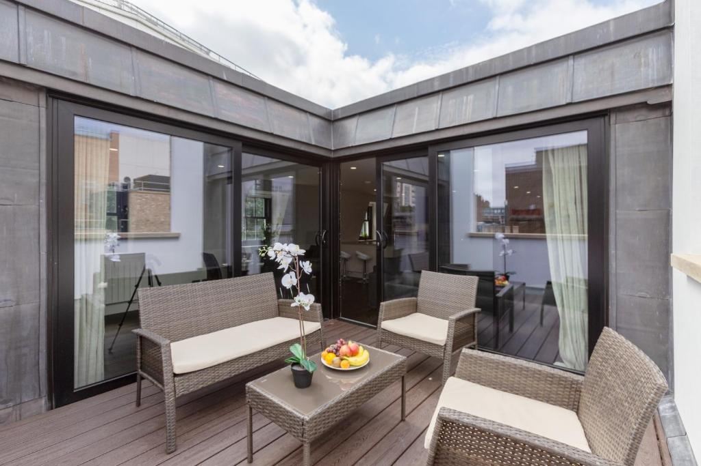
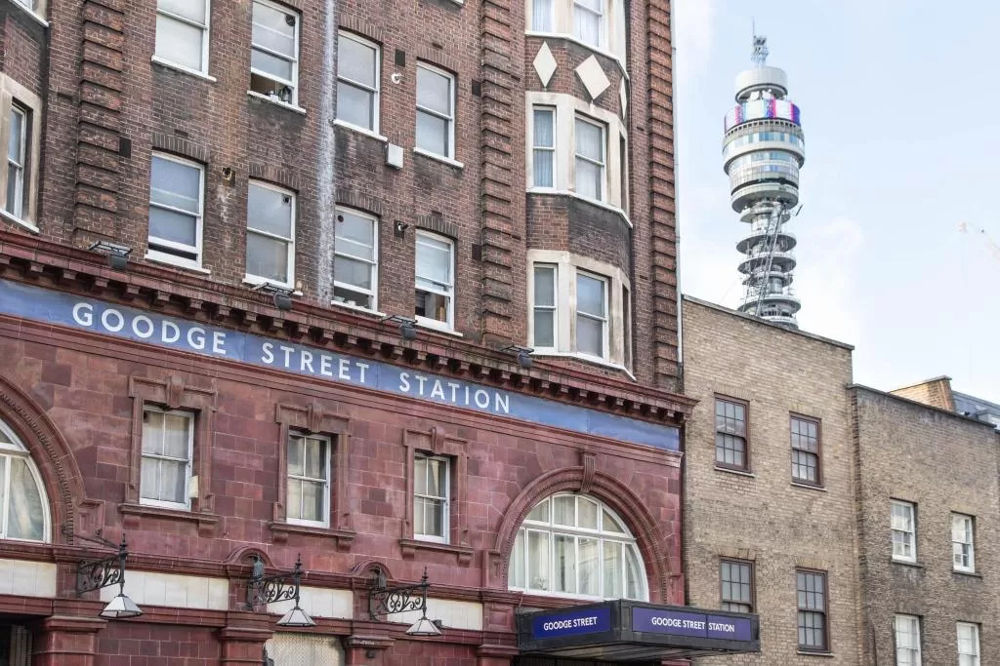
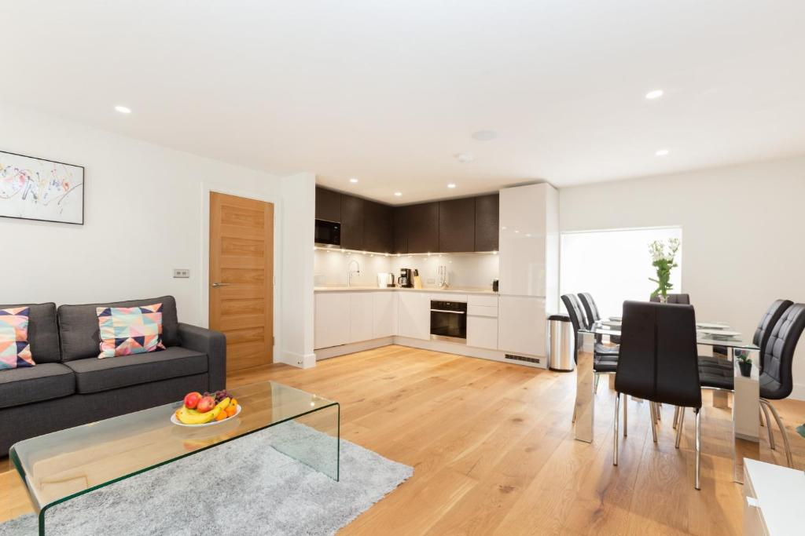
Otivm Hotel
El Otivm Hotel está ubicado en Roma, a poca distancia a pie del Palazzo Venezia. Se halla a 500 metros de la sinagoga de Roma.
El aeropuerto de Roma-Ciampino queda a 20 km. Ofrece servicio de conserjería, recepción 24 horas y WiFi gratuita en todas las zonas. También tiene terraza.
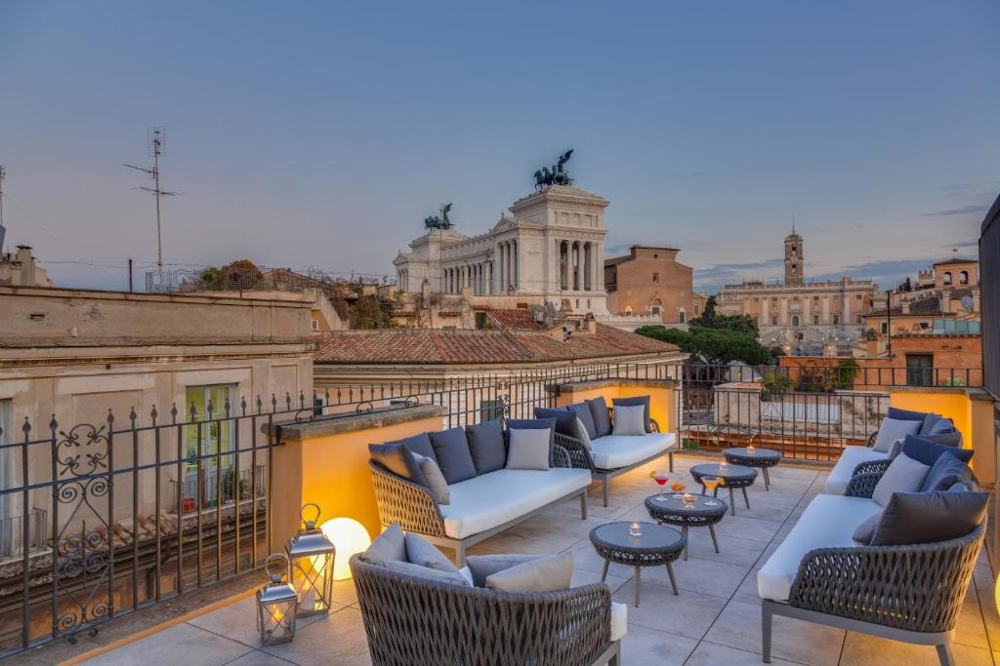
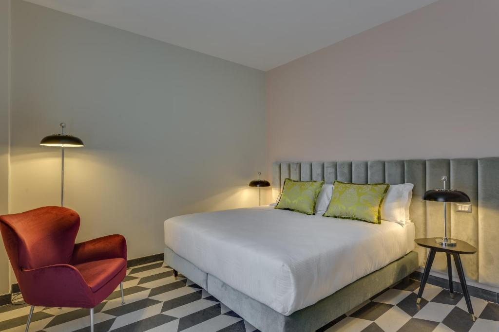
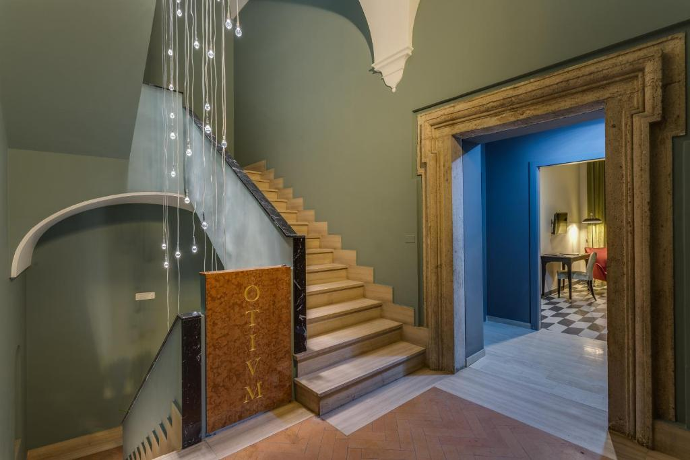
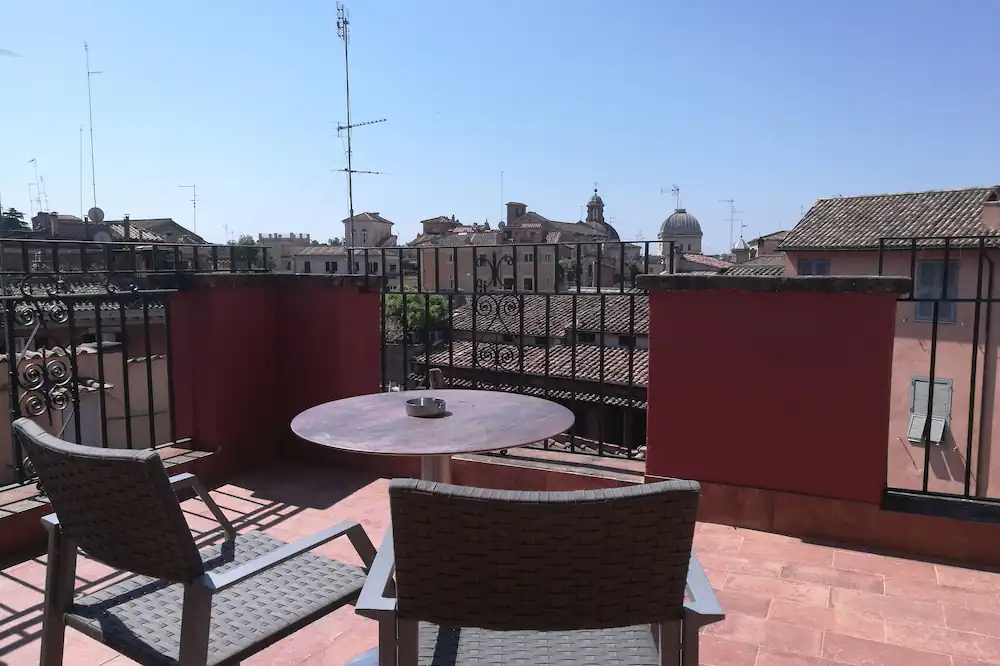
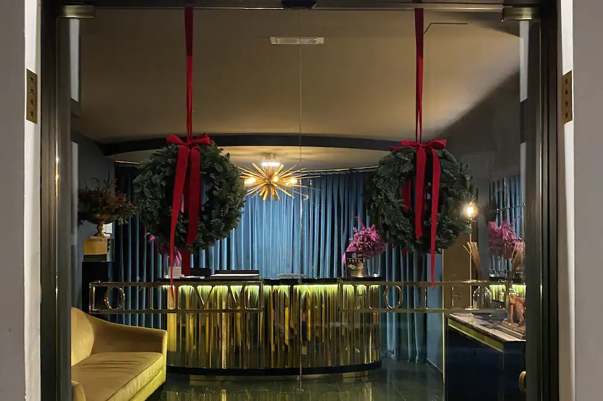
Ahora podemos ver los precios por noche de cada uno de los hoteles presentados anteriormente
Hotel
Precio
Citizen M Paris Champs-Élysées
123
Central London Suites - Fitzrovia
160
Otivm Hotel
134
¡Recuerda que si te registras tendrás descuentos y otras muchas sopresas más!
 Contacta con nosotros
Hoteles
Viajes
Inicio
Contacta con nosotros
Hoteles
Viajes
Inicio